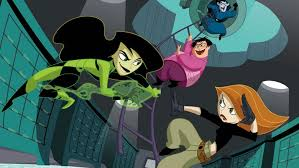

About Kim
Kim Possible is a teenage girl tasked with fighting crime on a regular basis while coping with everyday issues commonly associated with adolescence.
Kim fighting her enemies.
Kim's Characteristics
- She fights crime
- She is trying to cope with everyday life, while dealing with villains
- Her best friend Ron and his mole rat accompany her everywhere.
Kim's Friends
Click on the links below to learn more about her friends.